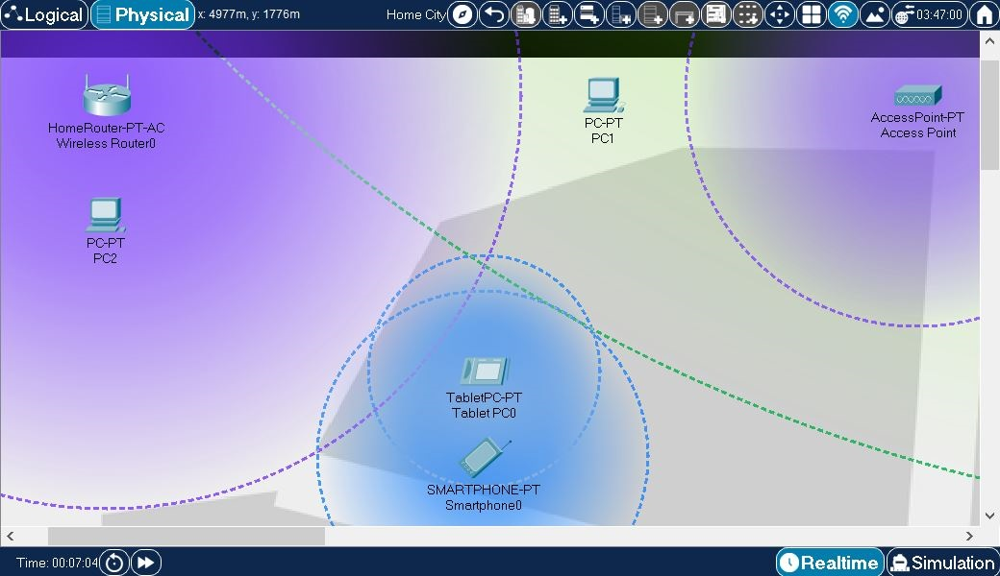
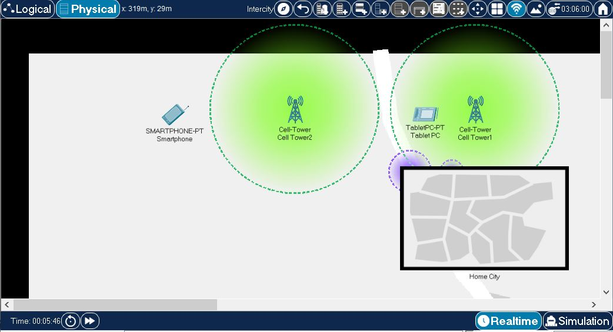
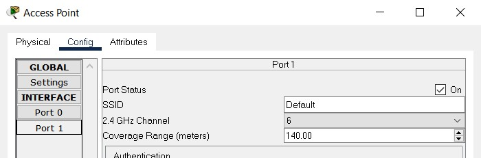
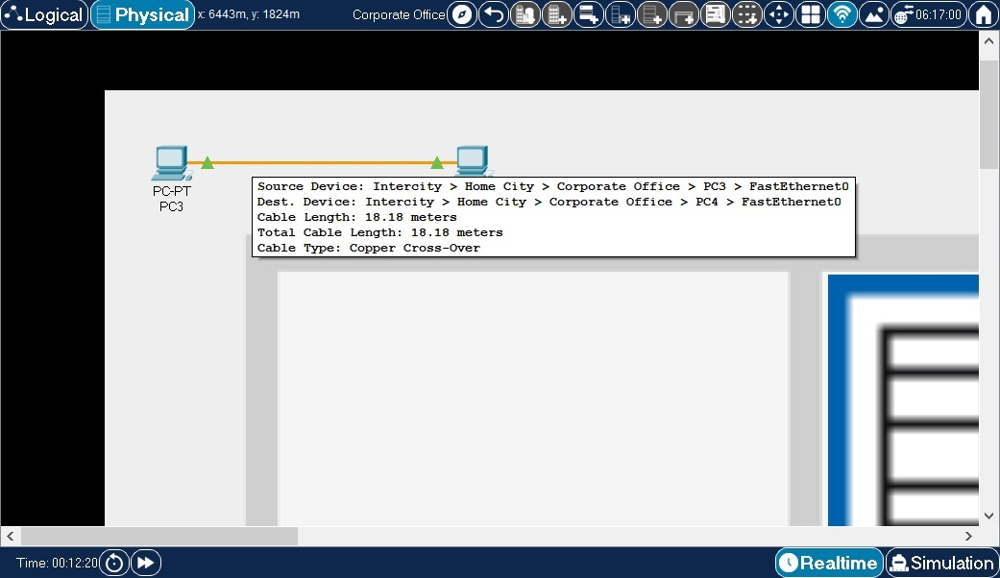

The Physical Workspace: Distance Measurements
The Physical Workspace provides the dimension of distance to Ethernet and wireless devices. This distance parameter is one of the factors that determine if a device is able to connect or not connect to another device.
Access points wireless routers can establish connections with wireless end devices that are within a certain distance range. This range is indicated by a translucent colored circle area surrounding the wireless device.
In this example, a few end devices and wireless source devices have been created. They have all been moved from the default wiring closet and placed directly onto the "streets" of the city (for demonstration purposes). Note the following:

The following image shows environment outside the Home City above. Note that wireless signal from Cell Tower1 can be seen inside Home City. At the same time, wireless signals from devices inside Home City can be seen at this level as well. Similarly to Home City example above

Wireless range for Access Point, Wireless Router and other wireless devices can be configured in their wireless port configuration settings, as can be seen in the following image

In the above, wireless range of and Access Point is set to 140 meters. Cell towers in Packet Tracer have default wireless range of 1000 meters and this explains why wireless range circles for signals from cell tower devices are so much larger in size than the ones from the access points. Wireless range value configured in the above dialog amounts to the radius of the circle representing this signal on the workspace.Ethernet connectivity is determined by a cable length of 100 meters. There is no partial connectivity for Ethernet, it is either within (has connectivity) the length of 100 meters or outside (no connectivity) of it. By pointing at a cable in physical mode, a pop-up box will appear showing the device interfaces connected to this cable and the segment and total length.

In Preferences dialog you can turn on and off the effects physical properties of cables and wireless links have on network behavior (see Enable Cable Length Effects and Show Wireless Grid options under Interface and Hide tabs respectively). When you opt to enable these cable effects, beware that moving connected devices between or within physical containers will affect physical properties of their cable and wireless links and that, in turn, can play a role on whether devices can successfully communicate with one another. In this case, any time you notice that two devices in Logical workspace do not communicate with one another, you may want to check whether the cables they are connected with do not exceed maximum cable length for the cable type used. Likewise, it might be worth checking if two wireless devices are not separated by too great a distance between them for the wireless link to be possible. Distance Measurements section has more information on this subject.Packet Tracer now also has the ability to bend, group and color code cables. This feature is covered in the Cable Manipulation section.